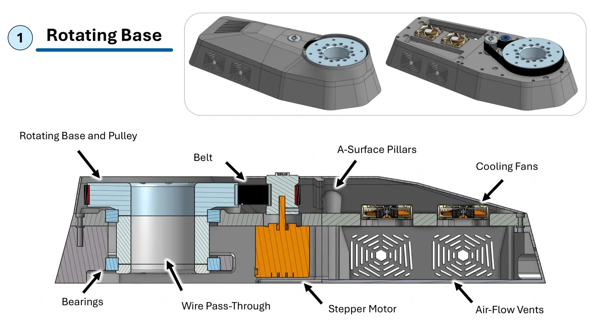
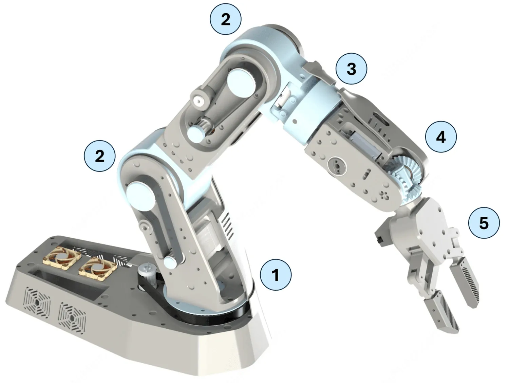
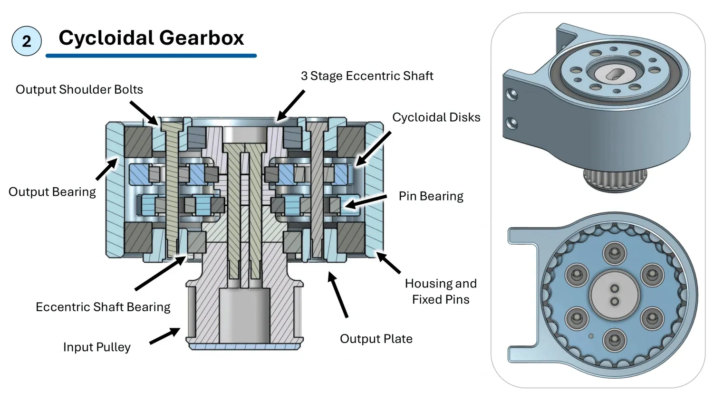
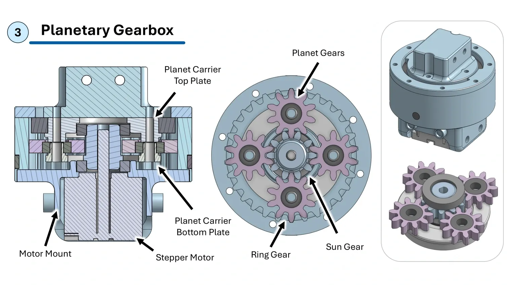
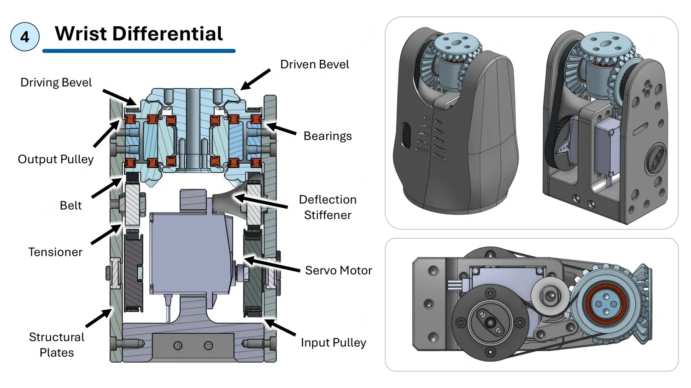
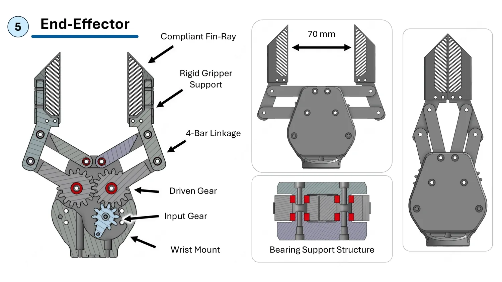
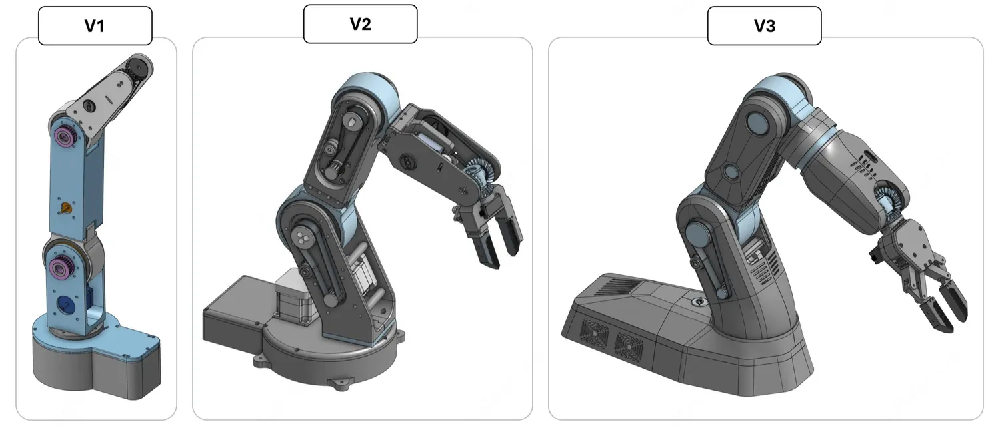
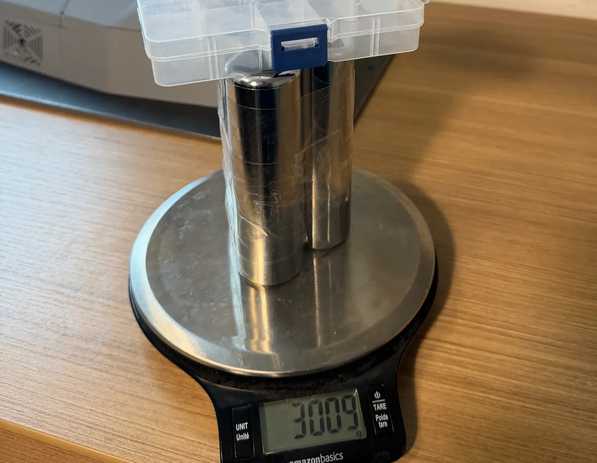
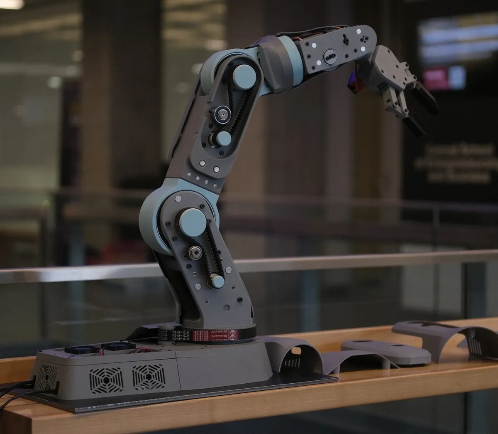
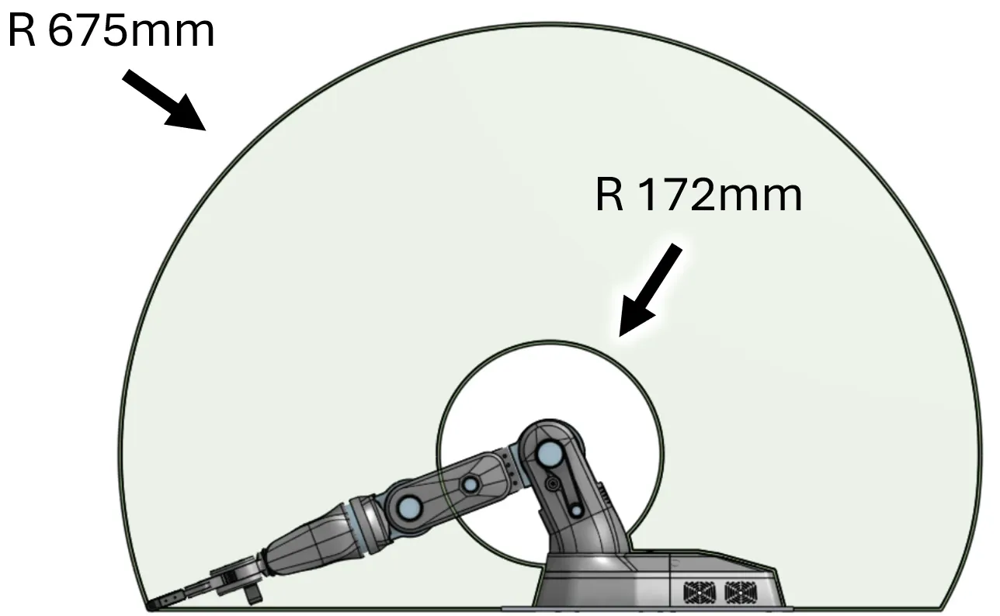

Rotating base
A belt drive turns the whole arm on bearings. The base also holds the electronics, with two fans pushing air out through vents in the side.
NEMA 17 · 5:1 belt · 1.9 Nm · ±170°
Personal project · 2026
A six-axis arm built around gearboxes we designed and printed ourselves. It lifts 3 kg, reaches 690 mm and repeats to about 1 mm, and the parts cost $296.70.

I started from constraints and criteria, then sketched the layout and ran first-principles torque calculations for every joint before modelling anything in Onshape. Those numbers set the motor sizes (a NEMA 23 at the shoulder, NEMA 17s and a NEMA 14 further out) and the reductions, up to 58.5:1 at the shoulder.
Everything is designed for 3D printing around off-the-shelf bearings, belts and motors, which made each iteration quick to print and test.
Pick a number on the render or a subsystem from the list.


A belt drive turns the whole arm on bearings. The base also holds the electronics, with two fans pushing air out through vents in the side.
NEMA 17 · 5:1 belt · 1.9 Nm · ±170°

Used at the shoulder and the elbow. A belt drives the eccentric input shaft, and the cycloidal discs roll against fixed pins in the housing. The housing is the output, so the gearbox doubles as the joint.
Shoulder · NEMA 23 · 58.5:1 · 30 Nm · −5° to 225°
Elbow · NEMA 17 · 52:1 · 8.3 Nm · ±100°

The sixth axis. A planetary stage rolls the forearm so the gripper can tilt sideways as well as up and down.
NEMA 14 · 4:1 · 0.56 Nm · ±150°

Two servos drive a set of bevel gears. Turning both the same way pitches the wrist, and turning them in opposite directions rolls it.
2 × 25 kg·cm servos · 2.6 Nm · pitch ±90°, roll ±170°

A parallel four-bar keeps the fingers parallel as they close. The fin-ray fingers bend around whatever they grab, so it can hold an egg, a pencil or a billiard ball.
20 kg·cm servo · 70 mm opening
I owned the electrical side, which covered the schematics for 4 stepper motors and 3 servos and the robot control firmware. Inverse kinematics I wrote runs on a PC and streams joint targets to a microcontroller, which drives the steppers through TMC2209 drivers and runs a homing sequence at startup.
The arm went through three versions. Later ones added mechanical hard stops, two cooling fans in the base, and magnetic cover panels that come off for repairs and cable routing.

The shoulder lifted 3 kg, and the shoulder and elbow each held 1.5 kg at full reach. At 3 kg the wrist starts to flex. Gripping tests covered a billiard ball, a mouse, an egg and a pencil.



| Joint | Actuator | Reduction | Expected torque (Nm) | Range |
|---|---|---|---|---|
| Base | NEMA 17 stepper | 5:1 belt | 1.89 | ±170° |
| Shoulder | NEMA 23 stepper | 58.5:1 belt + cycloidal | 30.33 | −5° to 225° |
| Elbow pitch | NEMA 17 stepper | 52:1 belt + cycloidal | 8.26 | ±100° |
| Elbow roll | NEMA 14 stepper | 4:1 planetary | 0.56 | ±150° |
| Wrist pitch, roll | 2 × 25 kg·cm servo | Bevel differential | 2.57 | ±90°, ±170° |
| Gripper | 20 kg·cm servo | Parallel four-bar | 70 mm opening |
Total $296.70 in parts. The arm weighs 5.5 kg, or 11.5 kg on its weighted base plate.